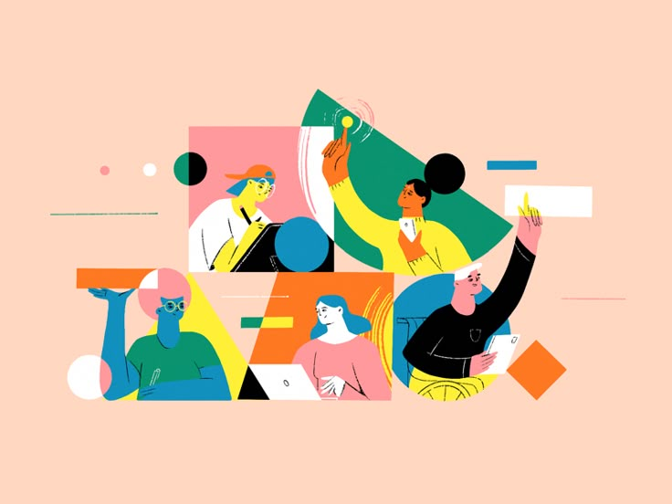
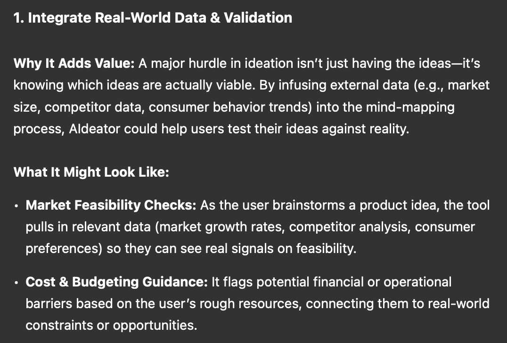

Key takeaways from Learn About, TextFX, and NotebookLM
The three products produced by Google AI Labs provided me with so many valuable insights. In this post, I’m going to apply those insights into the design and development of my own LLM application.

A quick recap: my previous concerns
From my conversations with friends and classmates, I identified a few key challenges faced by this ideation tool:
- It’s difficult to pinpoint very clear and specific user scenarios for the tool.
- The tool doesn’t always deliver consistent value, as the quality of the output can fluctuate, leading users to lose interest quickly.
- Many users struggle to recognize the unique strengths of LLM—-for example, their ability to generate unconventional associations—and thus lack enough motivations to use the tool.
At this stage, AIdeator is an LLM-powered application designed to generate mind maps that support human collaboration in developing innovative product ideas. It builds out the mind map by expanding branches using a set of pre-defined brainstorming methods, each with clear, structured steps.
The core structure is promising, but a closer look reveals several unresolved ambiguities. How should I position this product—as a creative booster like TextFX, a practical tool like NotebookLM, or a hybrid of both? Who are the actual users? What specific value are they expecting from the tool? And perhaps most importantly, how should I frame and brand AIdeator so that its purpose and benefits are immediately clear to its target audience?
Reframe the product
Based on these queries, I constructed 4 main user scenarios:
- early startup founders use the tool to brainstorm profitable produce ideas
- they have relatively clear ideas about market and target customers (input)
- they want profitable, innovative, and feasible product ideas
- initial stage of product development
- desired output: a clear and well-organized product description documentation (better with text & images)
- individual developers use this tool to come up with their new personal project ideas
- they start with a problem statement they want to solve
- they are looking for human-centered, creative, and implementable project ideas with suggested feature listing
- initial stage of product development
- desired output: a clear documentation of product overview, features, (roadmap)
- small to medium size companies use this tool to look for solutions to solve customers’ pain points
- the brainstorming tool only acts as a reference list that helps the team expand their thoughts
- guide the team (without much experience in design) to run innovation tournament and brainstorm innovative solutions
- in the middle of product development stage (usually already with mature products, so more contextual information as input)
- desired output: a clear documentation of problem statement and targeted solutions with suggested implementation strategies
- students use this tool to brainstorm their school/club/personal project ideas
- they are passionate about tech and are looking for creative and feasible project ideas for school and club assignments
- desired output: a clear documentation of project proposal with potential features
After going through the list, I felt that something was slightly off. Then I suddenly noticed a pattern: not a single real, tangible pain point was addressed in the text. In other words, these are all things people can already do—-with or without the product. At this stage, the tool feels more like an art piece than a solution that delivers concrete business value.
Do I want to build a purely creative tool? Probably not. That realization led me to shift my focus toward integrating more utility and practicality into the product, ensuring it not only sparks creativity but also solves real problems and delivers meaningful value to its users.
Visualizing the product idea? Targeting a proven market demographic? Verifying product–market fit and business value? Or even just helping users generate a list of inspiring product ideas based on past successes? I had a lot of raw ideas swirling in my mind. At this point, I decided to turn to GPT o1 for some fresh suggestions. (Interestingly, I suddenly realized that I’ve become a potential user of my own product!)
Below, o1 suggested a couple potential directions that I might consider taking. Here’s a sample excerpt.

After evaluating the effectiveness and feasibility of these insights, I decided to move forward with a few additional features to strengthen the product’s value:
- Market feasibility checks: As the user brainstorms a product idea, the tool pulls in relevant data (market growth rates, competitor analysis, consumer preferences) so they can see real signals on feasibility.
- Budgeting and feaibility guidance: The tool will offer rough estimates of financial and technical requirements, linking the idea to real-world constraints and opportunities to help users assess what’s realistically achievable.
- Step-by-Step Implementation Plans: After an idea is chosen, the tool generates a suggested timeline, key tasks, resource needs, and potential budget ranges.
Embrace human-centered design
After dealing with the overall direction, I started diving into the granular details of design. Google’s AI products use a lot of human-centered design principles and always place humans at the forefront. Here I want to also integrate these principles in my product to make it intuitive and user-friendly.
1. Guided freedom in brainstorming
Brainstorming is an activity that values autonomy and a sense of control. Users don’t want to feel driven or dominated by AI—-they want to be the idea owner, the one who ultimately arrives at the most brilliant solution. With that in mind, the interface should make it easy and intuitive for users to provide feedback, with distinct visual hierarchy to reinforce that they can always intervene and steer the direction of the brainstorming process.
Retaining control in the hands of the user can be a delicate balance. It means controlling the pace and flow of information while keeping the AI’s presence subtle yet consistently accessible. More specifically, instead of overwhelming users with a large volume of ideas, I aim to limit the number of items to around seven—-a number backed by cognitive research as the typical capacity of short-term memory. At the same time, the information density should remain low. Presenting each idea as a keyword or short phrase makes the content feel more digestible and less cognitively demanding, helping users stay focused and in control.
We can take it a step further by using color or transparency coding to differentiate between AI-generated and human-generated ideas—-ensuring that ideas only become finalized or “solid” once they receive human confirmation. This reinforces the concept of AI as a co-creator, not the decision-maker, keeping creative ownership firmly in the hands of the user.
2. Creative touch and unexpectedness
Adding creative touches and elements of surprise is also essential, as the tool is inherently a creative product. On a surface level, color is a powerful visual cue for creativity—using color coding for consolidated product ideas or adding vibrant highlights to key user interactions can make the UI feel more playful and dynamic.
Another way to enhance this experience is by allowing users to adjust the “creativity level” or “wildness” of the ideas being generated. As we know, different user groups will have different tolerances for novelty versus feasibility. Giving users control over this setting could make the tool feel more adaptable and engaging—almost like a real invention machine that powers and responds to human creativity.
The amount of information revealed at once also plays a key role in shaping the user’s sense of unexpectedness. Instead of delivering too much too quickly, the tool should generate content gradually, focusing on keywords or short phrases rather than full paragraphs. This keeps the experience dynamic and encourages curiosity as ideas unfold step by step.
Finally, introducing elements of randomness can spark creative breakthroughs. Randomness often leads to unexpected connections. A “shuffle” feature that mixes or swaps concepts, or a “mysterious expansion” branch that adds an entirely out-of-the-box tangent to the current idea, can inject surprise and keep the ideation process feeling fresh and imaginative.
3. Reduce friction along the way
Brainstorming thrives in a frictionless environment, where users’ creativity can flow freely across the space. This means the user experience must be seamless, allowing users to add, edit, and rearrange ideas at any point without interruption. To support this, we can enable features like organic combination, swapping, and replacing of concepts to form new ideas. In short, the core principle is to make the association between concepts as frictionless as possible.
4. The possibility of incorporating multi-modal output
In my creative process, visual content is key. Often, a single image of a product prototype can instantly reshape my perception of an idea and significantly elevate its potential. Following that line of thought, I’m planning to experiment with the newly launched OpenAI 4o Image Generation feature. In the next post, I’ll be exploring this tool to see whether it has the potential to enhance and strengthen this product.